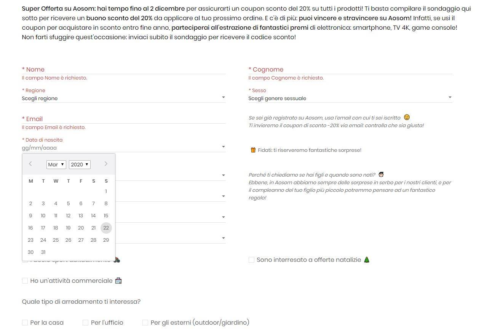
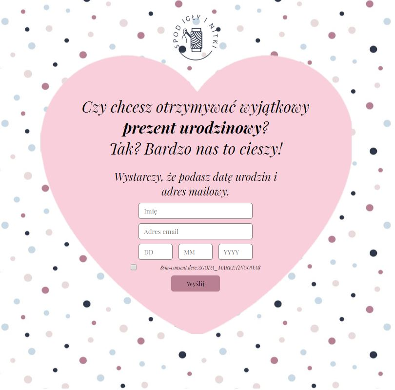
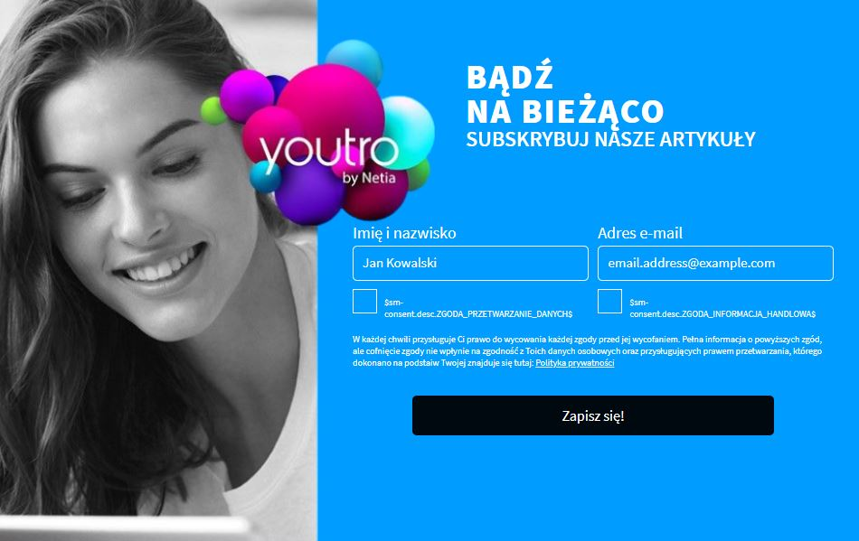
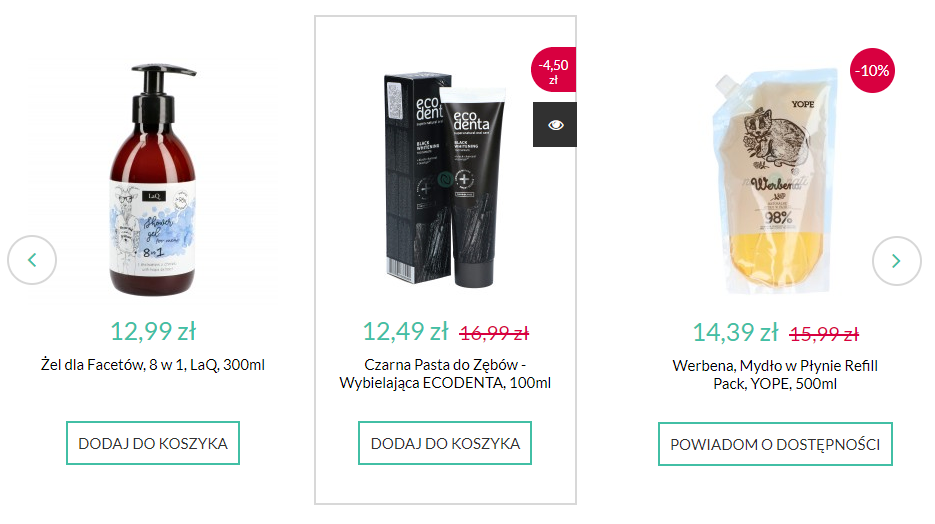
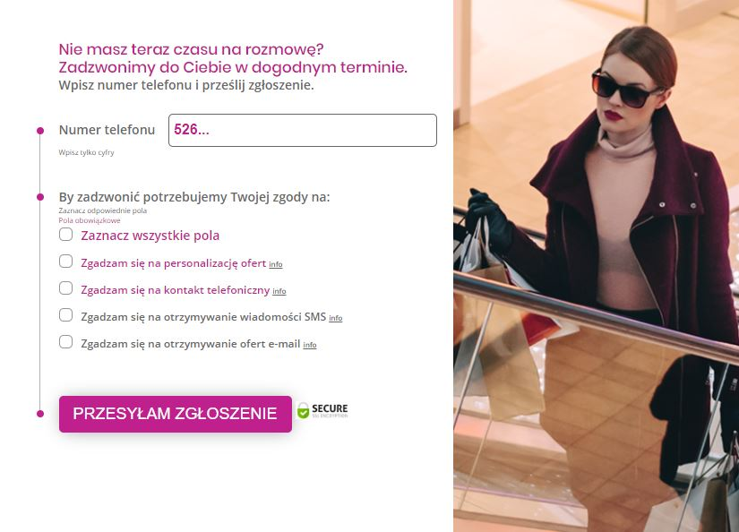

O mnie
Cześć! Jestem Karolina i mieszkam w Krakowie. Przygodę z Front-Endem zaczęłam pod koniec 2017 roku i od tamtej pory rozwijam swoje umiejętności w tej dziedzinie - w tym momencie głównie z Angulara i JavaScriptu. Obecnie pracuję jako Junior Front-End Developer w jednej z krakowskich firm.
Prywatnie lubię góry, malowanie obrazów i czytanie książek i żałuję, że doba ma tylko 24 godziny.
Zapraszam do kontaktu.
Doświadczenie
Front-End Developer - Salesmanago
08.2019 - obecnie-
Tworzenie widoków w AngularJS
-
Tworzenie landing pages, formularzy, popupów, sidebarów, ramek rekomendacji - razem z walidacją przy wykorzystaniu HTML, CSS, JS przy zachowaniu responsywności
-
Tworzenie mailingów zgodnych z wymaganiami różnych skrzynek mailowych jak gmail, Outlook
-
Tworzenie koncepcji maili, popupów, formularzy w programie Photoshop
-
Uczestniczenie w rekrutacjach
Front-End Developer Internship - Virtua
02.2019 - 05.2019-
Stworzenie responsywnego landing page z wykorzystaniem HTML, Sass, JavaScript oraz task managera Gulp.
-
Stworzenie theme dla sklepu internetowego w oparciu o platformę ecommerce - Shopware, wykorzystując Sass, jQuery oraz Gulp.
Projekty
Landing Page - Hotel Webpage
HTML, Sass, JS, Gulp
Projekt responsywnej landing page z wykorzystaniem HTML, Sass, JavaScript oraz task managera Gulp.
Formularz z walidacją
HTML, CSS, JS
Projekt formularza z obszerną walidacją napisaną w JavaScript. Wszystko jest napisane w jednym pliku ponieważ było to odgórne wymaganie. Formularz posiada customowy kalendarz.
Landing Page
HTML, Sass, JS, Gulp
Projekt responsywnej landing page z wykorzystaniem HTML, Sass, JavaScript oraz task managera Gulp. W projekcie wykonałam dwupoziomowe menu, stylowanie elementów odtwarzacza mp3 oraz dodałam karuzelę wykorzystując bibliotekę slick. Wykonałam również podstawową walidację formularza oraz zapisywanie maili do bazy danych Firebase.
Theme - Shopware
HTML, Sass, JS, Gulp, Shopware
Theme dla sklepu internetowego z wykorzystaniem platformy ecommerce - Shopware, wykorzystując Sass, jQuery oraz Gulp. Oprócz nadania styli dla strony głównej oraz strony kategorii utworzyłam plugin ze spersonalizowanym elementem „shopping-world”. W projekcie zachowane było podejście RWD.
Smoothie webpage
HTML, Sass, JS, Gulp
Projekt responsywnej strony z wykorzystaniem HTML, Sass, JavaScript oraz task managera Gulp. Wykorzystana była również biblioteka Slick do wykonania karuzeli. Samodzielnie zaprojektowałam wygląd strony, wykonałam podstawową walidację formularza oraz zapisywanie maili do bazy danych Firebase.
Kanban board
HTML, CSS, jQuery
Projekt tablicy z kolumnami, które zawierają karteczki. Karteczki można przenosić pomiędzy kolumnami, edytować, zmieniać im kolor. Projekt napisany z wykorzystaniem składni jQuery i programowania obiektowego.
Rock, paper, scissors
HTML, Bootstrap, JavaScript
Gra napisana w języku JavaScript. Do wystylowania gry użyty był głównie Bootstrap. Aplikacja pozwala zagrać w popularną grę razem z Komputerem.
Random quote machine
HTML, CSS, jQuery, API, ajax
Aplikacja losująca cytaty pobierane z zewnętrznego API. Cytaty można udostępnić na twitterze - wybrano tylko te, które mają do 140 znaków.
Country Search Engine
HTML, CSS, jQuery, API, ajax
Wyszukiwarka krajów napisana w jQuery. Informacje o krajach są pobierane z zewnętrznego API.
To do list - React
HTML, CSS, React
Projekt listy zadań wykonanej w React. Oprócz dodawania zadań, można je usuwać i odznaczać. Poza tym zadania są liczone. Projekt wykonany przy użyciu create-react-app.
Stopwatch
HTML, CSS, JS(ES6)
Projekt stopera napisany z wykorzystaniem składni ES6. Stoper posiada funkcje, które go uruchamiają, zatrzymują, resetują, a także dodają czas do listy i czyszczą tą listę.
Przykładowe projekty wykonane podczas mojej pracy (screeny)





Technologie
-
 HTML
HTMLSpecyfikacja 5. Dobrze radzę sobie w HTML, wykorzystuję znaczniki semantyczne, bez problemu tworzę prawidłową strukturę strony.
-
 CSS
CSSCSS podobnie jak HTML, umiem w stopniu bardzo dobrym i czuję się w nim swobodnie.
-
 Sass
SassSassa używam na co dzień w projektach. Nie tylko zagnieżdzenia, ale również zmienne, mixiny i podstawowe funkcje.
-
 JS
JSJavaScriptu używam głównie do dodawania funkcjonalności na stronie - radzę sobie z tym bez problemu. Używałam go również do wykonania prostych aplikacji i nadal się rozwijam w tym temacie. Specyfikacja ES6 nie jest mi obca.
-
 Bootstrap
BootstrapW swoich projektach wykorzystywałam zarówno elementy jak i komponenty.
-
 jQuery
jQueryWykorzystywałam do tworzenia interakcji na stronie, a także małych aplikacji np. Kanban Board.
-
 Gulp
GulpTen task manager poznałam na stażu i bardzo mi się spodobał. Od tamtego momentu używam go bardzo często.
-
 AJAX
AJAXAjaxa używałam, aby korzystać z zewnętrznego API.
-
 React
ReactAktualnie kładę duży nacisk na rozwój w tej technologii.
-
 Shopware
ShopwareJest to platforma ecommerce, z którą miałam okazję bliżej się poznać podczas 3-miesięcznego stażu.
-
 Avocode
AvocodePodobnie jak i Photoshop używałam go do analizy projektu graficznego - eksportu plików psd, rozpoznawanie czcionek, kolorów, wymiarów i odległości pomiędzy elementami.
-
 JIRA i Bitbucket
JIRA i BitbucketNarzędzia, które miałam okazję wykorzystywać podczas stażu.
-
 Git
GitW codziennej pracy wykorzystuję ten system kontroli wersji, a swoje repozytoria umieszczam na Githubie.